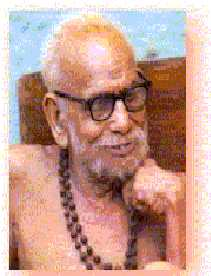

Here is an excellent article of Sri Maha Perival entitled "Namo Namah"

Namo Namah
Reflections of Paramacharya
Courtesy: Sri Vishnu Sahasranama Satsangam
All of you think of me as a saint and perform namaskara to me. I have also a great yearning to perform namaskara to persons who are known to be real saints. But my position as Jagatguru and Peetadhipathi, and the title of Bhagavatpada, which have come and stuck to me at a young age, without any merit on my part for deserving them, have deprived me from that young age itself, of the good fortune of doing namaskara to saints, the great ones, moving about before our very eyes.
My receiving all your namaskaras, without my performing namaskaras to any person, makes me think of my janma as empty and in vain. Our Acharya (Adi Sankara) has done a great good in this regard. What is that? He has reminded that: "Sannyasis, like us, to whom you perform namaskaras, regarding them as saints, should never think that the namaskara belongs to us. It belongs only to the one Paramatma and Parasakthi which conducts and controls all the affairs of the jagat". Not stopping with that, he has also made a rule for us to follow, in order that we make sure of conveying your namaskara to the Paramatma and do not accept the namaskara ourselves in the thought that it belongs to us. The rule will look very easy to follow, at first sight.
The Acharya (Adi Sankara) has, in his bhashyas, referred to the one primordial principle and power (Paramatma and Parasakthi) conducting and controlling the Jagat as NARAYANA. There are many reasons for this. I will not go into a discussion on this. I will just take up one point.
Our country is a country where threadbare analysis of and enquiry into the facts of life (tatva vichara) has been taken to their end and documented in Sastras which include Vedanta, Mimamsa, Sankhya, Nyaya, etc. The Acharya wrote bashyas mainly to help those involved in the devoted study of sastras. Though it be so.Even though this country is well known for "tatwa vichara", it is even more well known (good name and bad name both) for giving us a large number of Gods (deities). Instead of the Absolute being considered as a "dry" abstract principle, the deities which are no different from the Absolute, have form, and appear as the Absolute come to life. The Acharya, in his bhashyas, could have dealt with the Paramatma as the prapancha karana sakthi, the Absolute, as a dry abstract principle. Instead of doing so, and in order that the treatment may be appealing to the community which is used to relating itself to God with Form, he had thought it necessary to refer to the Absolute at several places by a Name. The question arises about which Name to choose.
Though there are many deities, these can be generally considered as falling under the broad classification of Saiva and Vaishnava. Between Siva and Vishnu, he may thought about which to choose. The Acharya was himself an Avatara of Siva. So, he may have thought – why use my own Name. Siva is very dear to Vishnu. And, similarly, Vishnu is very dear to Siva. Therefore, wherever Vedanta refers to Paramatma as Jagat-karana-sakthi, Prapancha-mahasakthi, a-bhramman, Iswaran, with an implicit suggestion of attributed Form, where Murthy Rupa is indicated, the Acharya has used NARAYANA as the name…
In between, I mentioned the word Iswara. Though Iswara is commonly equated with Siva, in the Vedanta Sastra, Iswara is Sagnuna-brahman. Ramanujacharya and Madhwacharya also have used the word Iswara in this sense only. The Acharya has composed many stotras on Siva, like Sivananda Lahiri. It may be asked whether in those stotras he was doing stuthi of himself. They are bhakthi stuthis. Different sects and communities of people have their own likes and preferences among the deities. In order to be helpful to one and all in concentrating and steadying their mind in the worship of their preferred God, the Acharya composed stuthis on all the deities. How could he have left the important deity Siva? So, he composed stuthis on Siva also.
The Acharya had no "identity" for himself. He was always "Atma Swarupa". Therefore, it was possible for him to take on, as it were, identities with different mental inclinations and work out appropriate ways for the elevation of people with different mental inclinations and preferences.
Water, which is colourless, appears black when passing over black soil, and red when passing over red soil. It is like that. So, for the benefit of people who take to Bhakti marga for self-fulfillment, he made stuthis to different deities to suit different preferences. When he made such stotras, he became, as it were, the Bhakta of such deities. In that way, when he made stotras on Siva, he could become a Siva Bhakta and not remain a Siva Avatara. It would be self – praise only if, remaining a Siva Avatara, he sang in praise of Siva. If he became a Bhatka of Siva and sang his praise, did it not become permissible to him to sing his praise as much as he wanted ?
It may occur to some that the Acharya gave central place to Siva, as Chandramouleeswara, in his Mutts and made the other deities adjuncts. The Mutts are meant for all and so it may be asked why he gave central place to Siva in the Mutts. The answer is that the Acharya did not plan that this should be so. The Parameswara (God) himself gave to his Avatara five Spatika Lingas and commanded him to have them installed in five places and arrange for the pooja. In carrying out this command, the Acharya installed in both his Mutts, here in Kanchi and in Sringeri, two of the Spatika Lingas. Thus the Lingas that Parameswara himself had given and installed in these two places for which poojas were arranged became the central deities of worship in these Mutts and other deities became parivara deities. In the remaining Mutts also, for the sake "uniformity", the Acharya had necessarily to make the pooja arrangement as Siva Panchayatana.
Now you may ask: You said that Acharya, when he wrote Bhashyas which were books on Atma Sastra, was only in "Atma Swarupa" and had no "identity"; if he was "Atma Swarupa" , and remained as such, then why should he identify with Siva Avatara, and therefore think about "not talking about himself" and therefore think about using the NARAYANA name. I knew such a question can arise. I have my answer ready. I came to talk about this with a question paper and a answer sheet, all prepared.So, what is the answer? The answer is that "Atma Swarupam" will not write books. In fact, it does not do anything. It will just be as it is. It will not act or do. The moment he sat down to write, it means that the "Atma Swarupa" has yielded to place to Avatara. To be correct, the Samadhi state of Atma Sakshatkara is over, and the thought of having to perform a "duty" for the up-liftment of Dharma in this world for which this Avatara came makes him to sit down to write. In that movement, the question arises, Avatara means whose Avatara. When you get the reply Siva Avatara, it follows that Avatara Siva talking about Adhara Siva does not look proper and talking about Vishnu appears more graceful, balanced and dignified. Is that not so? So it is, in the Bhashya books, the root (moola) of the causal principle of the Jagat is referred to by the name Narayana. The supreme central meaning of these books is the Oneness (unity) of Paramatma and Jivatma, that is Advaita. In this way, the use by Siva Avatara Acharya of Vishnu's name brings in the Hari Hara Advaita - that Siva and Vishnu are one and the same. Mahavishnu has many names. In fact, there are a thousand names. Then it may be asked why the Narayana name is chosen. The supreme astakshari mantra of Mahavishnu has the Narayana name in it.
Ayana means path (marga). Ayana also means the end (goal) of the path. In both these senses, Narayana is the Ayana for the Nara (Jivatma). Bhrama Vidya Sastra gives the path to salvation. Narayana is Bhrama Vidya. When He appears as Krishna Paramatma, he himself says "Adhyatma Vidya Vidhyanam" in the Gita. The final goal of that Vidya is also He only. Therefore it is that when Bhrahma Vidua Guru Parampara is talked about, it starts with "Narayanam". So it is quite appropriate that in the Bhashya books, which are Bhrahma Vidya Sastras, the Narayana name is used.
The name Sankara joining with the name Narayana has given rise to a name Sankaranarayanan. In south Pandya country, there is a place where the worshipped image (murthy) is the image of Siva and Vishnu in one body showing their oneness. That image is known as Sankaranarayanan. The place is called Sankaranarayanan Koil. This is now commonly pronounced as Sankaranainar Koil in usage.The Acharya himself has used the above name in an important context. He has bequeathed to us in a question – answer form a text called "Prasnottara Ratna Malika". In the penultimate sloka of this work, the question is: Who is called Bhagwan and Maheswara. Our Acharya does not in reply give the names of Siva or Vishnu. Our Advaita Acharya gives the reply as the one Atma which is a communion of Siva and Vishnu. Even there he does not use Siva – Vishnu or Hari – Hara but has used Sankaranarayanan.
Q: Kascha Bhagwan Mahesah?
A: Sankara Narayanatmaikah
Therefore it is appropriate that this Sankara also gives a special niche for the name Narayana. Thus it is clear that the Acharya has referred to the great causal principle of the Jagat by the name NARAYANA. So, when he intends that the namaskaras performed to us must be conveyed to the Jagat-Karana-Vastu, he instructs: Convey to Narayana. And to carry out the instruction, he has made a rule, which appears easy on the face of it.
Only that Narayana, who has created all this and has endowed all this with vital energy (sakthi), has the "right" to accept all the namaskaras. Namaskara to any deity goes to Kesava.
We recite the sloka: Sarva Deva Namaskara Kesavam Pratigachhati. When namaskaras performed to the deities go only to HIM, how can namaskaras performed to ordinary people belong to them? All these namaskaras also go to HIM only. It is that we have been asked to always remember when namakaras are performed to us. In order that we do not "misappropriate" the namaskaras rightfully belonging to HIM only and make sure that the namaskara is duly redirected to HIM, the Acharya has most kindly defined a rule for us – a rule, which as I said earlier, is seemingly easy. The rule is that when someone performs a namaskara to us, we should say "Narayana, Narayana". If that is done, when the name is uttered, does not the person immediately come to mind? Here Narayana is that person. The moment He comes to mind, the thought that all namaskarams belong to HIM and we should not take away what is HIS right and possession also will come to mind; and we will convey the namaskara to the right place. That is why, the Acharya prescribed remembering Narayana (Narayana Smaranam). The smaranam is important.When we utter the word Narayana, it is only speech (vachanam). It is not remembering (smaranam).
Smarana means remembering with the mind. Concentratedly remembering. Just speaking it out with the mouth is of no use. It has to be deeply and concentratedly remembered and spoken with that consciousness – from that Narayana awareness. What we see in ordinary practice is that when as a routine we recite a sloka or mantra, it becomes only just uttering the words with meaning; it wanders thinking about other things and only the mumbling goes on. If that happens here, if the Narayana name is spoken without the mind remembering the Narayana, it will be a great crime – Maha Dosham. If misappropriation is a crime between people, is it not a very big crime when what belongs to HIM is misappropriated? Everyday, sannyasi receives namaskara from a number of people.
There is a great risk of his saying Narayana becoming a mere routine unless he remains ever vigilant and always awake. Otherwise, he may easily find himself involved in committing Maha-dosha. That is why I said this rule looks easy to follow; it is not actually easy. A true sannyasi, a hundred percent sannyasi, has no duties. He has no obligations to fulfil. He does not have to think about the well-being or otherwise of another. In that state, if someone performs namaskara to him, he does not have to think about the welfare of that person. If he starts thinking about that, slowly he will start thinking whether some good happened to that person. If his mind gets concerned with the welfare of a number of people in this fashion, what happens to his Ashrama Dharma, which demands that Atma Vichara be his only work. His supreme and only Dharma is to be ever immersed in Atma Vichara. If he does not do so, he is not a sannyasi. Because, he is not a sannyasi, no one need perform namaskara to him. So, when a namaskara is performed to a true sannyasi, he remembers his own Atma Swarupa in Narayana aspect – the Dwaita Loka Nirvaha aspect – and transfers the person's good and bad to Him almost as if saying that it is all your (Narayana's) concern: and severs further contact with that.
That is how it should be in the case of a true or cent per cent sannyasi. But in everything, there are good, bad and indifferent types. There are people like us who cannot be called true or hundred percent sannyasis but who may be called half – sannyasis (Swamiji goes into irrepressible peals of laughter while saying this…and then reflectively) even half may be too much...it will be fifty percent…let us use the word pass mark sannyasi…so, can pass-mark sannyasis, like us, act the same way, namely, when one performs namaskara to us, think that they have nothing to do with that and transfer it to Narayana and forget?
Some people may not understand whom I am referring to as half – sannyasis, like us. Let me make it clear. I said sannyasi has no duties. His only duty is Atma Vichara: released from duties to wife and children, he has no duties to other people either. Therefore he should transmit the namaskaras also to Narayana and leave it at that. But we sannyasis, occupying a Gurupeetham, and exercising the position as head of a Mutt, are the ones that I distinguish from other sannyasis and refer to pass-mark sannyasis. If you ask me why, the reply is that when we took, the GURU title, we also took up a host of duties. There is a heavy duty towards people in general, the human community. To consider the entire community as a body of devotees and aspirants, and conduct them to the right path is our big duty. We cannot be indifferent to the good and the bad that happens around us and to members of the community; if we did so, it will be a negation of duty, and we will be faulted for failing in our duty. We have to concern ourselves with bringing the people to the right path and with their good and well-being; and we have a duty to perform with this purpose in mind. When this is so, when our devotees and bhakthas, believing that we will do good to them, come and perform namaskara to us, how can we think that we have nothing to do with their well – being and tell Narayana that is his business and keep quiet? Will Narayana accept this action? I ask you for "subscription" for the preservation of Vedas. I ask for money for gopuram construction. Daily I receive "biksha" from you. All this is taking from you in the form of "dravya" . I also ask for physical labour. I ask for collection of rice from door to door for distribution. I ask for distribution of prasad from hospital to hospital. I ask for a pond to be dug for water for the cattle. Like this, everyday, I ask you for money or labour. How will it be fair, if I say I have nothing to do with you when you perform namaskara to me? If, because of that, I give you my blessing for your namaskara, will it actually do some good to you? Does my blessing have that power? People who are in constant communion with Paramatma have the true power of penance only can impart such power to their blessing. In the case of others. It can only have a small power to do good in the sense that all good thoughts have some power of doing good.
The amusing side of this is that the one who has cut off all connections with the outside and is immersed in his sadhana of Atma marga, acquires the power of Asirvada. Grace, Anugraha, by virtue of his dedication to his sadhana and the (spiritual) experiences he gets in that process. Such power comes naturally to him. Even without his knowing and intending, his Asirvadam reaches the person doing namaskara to him and does good. It is like a fully ripe fruit bursting and pouring its juice in the mouth of anyone who opens his mouth below it.
In our case, unlike the other who has Swanubhuti as the only purpose, there is danger of our preoccupation with chores connected with our duties in the outside distracting and taking us away from what we should be doing for Swanubhuti. This is a big risk. How far we are successful in performing the duties of the Guru without jeopardising the work for Atmalakshaya, in ensuring that the two works are not mutually detrimental but work in such a manner that the sadhana for Atmalakshaya imparts nourishing and vitalising power to our work for loka-kshema and the work for loka-kshema itself is performed in such a manner that the mind gets increasingly pure (chitta suddhi) and enhances the power or intensity of the sadhana itself, - how far we are thus able to neatly balance both the works and act within limits – that will also determine the power of our Asirvadam.
Even then, the real source of power is Narayana only. We should never forget that. If nothing moves without Him, it means that an Asirvadam also can bear fruit only if His Grace is there. So, we can neither "push away" the namaskara (to Narayana) thinking that we have nothing to do with it, nor think that we have "power" to give Asirvadam and bless. Then, what should we do? When you lower your body on the floor and prostrate before us, we should say "Narayana, Narayana" with the mouth, remember Narayana, mentally do namaskara to Him, and pray to Him, "Let your Grace do good to these children". Look at the problem our position creates for us even in this. We are not able to ake even this prayer (prarthana) on your behalf with "anjali" (use of hand). When you perform namaskara to us, we ourselves give "asirvadam". You also expect us to do so. If we say that we also have to do namaskara to another (nr0 and "try to tap" that source for giving the blessing to you, you will be disappointed. One feels comfortable only if the blessing comes immediately from the person to whom the namaskara is done. So, even though mentally we transmit your namaskara to Narayana, our hand which should be turned in "anjali" to Him, has to turn to you in the "asirvada" mode.
All these years, you have been coming in numbers everyday and performing namaskara to me. I, for my part, have been trying to do my utmost by way of mentally praying to Him on your behalf and for your good. Even then, if any of your prayers have borne fruit, more than my effort, it is due to your faith. I think that the "sincerity" of my prayer on your behalf cannot match your limitless faith in me.That is why I said that even your thinking that you get the fruit of my blessing is the fruit of your own faith. In the ultimate analysis, the only cause for the fulfillment of your prayer is Narayana's compassionate Grace toward you, which is yours without my "vakalat". Enthroned on a pedestal, and hundreds and thousands of people doing namaskara, and on top of that, hearing people saying "It is because of your blessing that such and such good happened; it is miraculous",….all this may land us into falsely thinking that we have the "authority" to give asirvadam, so, it becomes necessary to be very careful not to fall into the trap.
If we slip up even a wee-bit in this regard, we will be committing the maha-dosha of misappropriating what belongs to Narayana. Though outwardly the "Peetham" and "position" are there, in reality we are like the coolie carrying load. The coolie carries the load (luggage) of another. He carries it on his body. Similarly, we are to carry the "load" of your namaskara in 9our mind, and add the "weight" of our prayer on your behalf, and reach the whole to Narayana. It is doubtful whether the truth which is clear to the coolie is equally clear to us. The coolie knows that the luggage he carries does not belong to him; it belongs to another; and his job is only to reach it another place. This is the truth I am referring to. If we do not reach the "luggage" of namaskara to its destined place, namely Narayana, "He" will give us the "wages" for our crime. Like the coolie feeling the weight of the load on him, we have also to feel the weight of the namaskara and not treat it as an honour done to us. Out of our love for our bhakthas, the weight has to be carried gladly, though temporarily, until it is reached to Him. Even temporarily when it is carried, it is no doubt a weight. But if it is also appropriated, it becomes a permanent big weight of sin on us.
The predicament of the person to whom namaskara is performed is fraught with such risk! On the other hand, the case of the person performing the namaskara appears a blessed state. Blessed in which sense? When he lowers his body and prostrates before another person whom he considers a saint, he also "pushes" a load off his mind as it were, in the belief that the other person will take care of that. Namaha is sometimes itself interpreted as the meaning of "Na Mama" (not mine") – that is pushing away something as "not mine". A true namaskara will always be in this attitude only. Most people do not perform such true namaskaras. As I said earlier, there are cent per cent and pass mark types. Even in a pass-mark namaskara, at least for that fraction of the moment during the actual performing of the namaskara, he feels a relief. This is what we notice daily.
Jaya Jaya Sankara Hara Hara Sankara